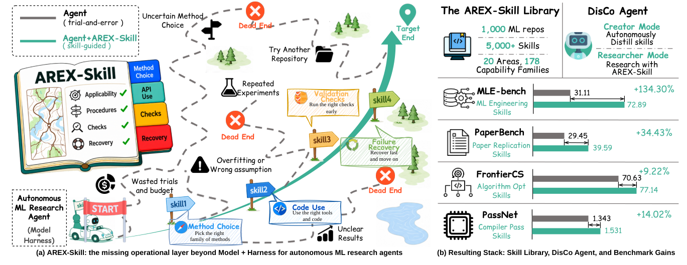
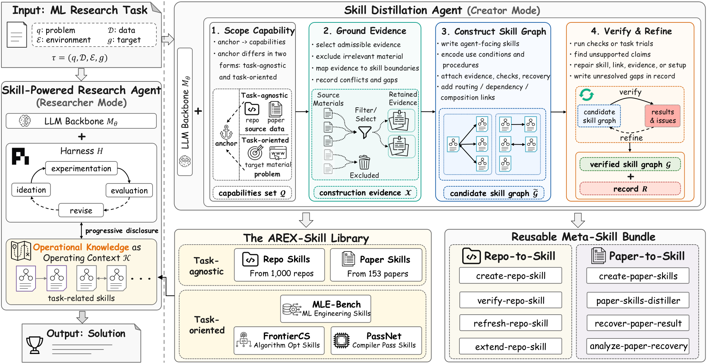

Repo-To-Skill: Distilling 1,000 GitHub Repositories into Verified AI4AI Skills (DisCo)
TL;DR
- "Repo-To-Skill: Distilling GitHub Repositories Into AI4AI Skills" (arXiv 2609.02749; Jianlyu Chen, Yuyang Hu, et al. — BAAI) names the layer that model + harness leave unspecified: operational knowledge \(K\) — the executable know-how that separates knowing a method from making it work — and upgrades the research agent from \(A=(M_\theta,H)\) to \(A_{res}=(M_\theta,H,K)\).
- DisCo is an agent that runs in two modes over the same backbone and harness: creator mode distills repositories/papers into verified skill graphs; researcher mode solves tasks with a task-relevant branch of the library loaded as operating context. Scaled task-agnostically over the open ecosystem, this yields the AREX-Skill Library: 5,353 verified skills from 1,000 widely used ML repos (+153 papers), organized into 20 areas and 178 capability families.
- With GPT-5.5, harness, and execution budget held fixed, skills lift MLE-bench Any-Medal from 31.11% to 72.89% (+134.3% relative — and 8.45 points above the best public leaderboard agent on any backbone), PaperBench replication 29.45→39.59 (+34.4%), FrontierCS 70.63→77.14 (+9.2%), PassNet 1.343→1.531 (+14.0%).
Why this matters
The field has spent two years strengthening exactly two components — backbones get smarter each generation, harnesses get better engineered — and this tracker documents both threads exhaustively. DisCo's claim is that a third component was silently missing and is worth more than either at the margin: the same Codex agent goes from bottom-of-leaderboard (31.11 on MLE-bench) to top (72.89) with zero change to weights or scaffold, purely by handing it distilled, verified, executable domain know-how. If that number survives replication, "skill engineering at ecosystem scale" becomes a third axis of agent capability, and one that compounds: declarative sources (repos, papers, blogs) are abundant and continually refreshed, while the expert labor that currently converts them into agent-usable form is the bottleneck DisCo automates.
The framing also cleanly separates concerns that this tracker's self-improving-agents thread keeps entangling: the harness specializes how the agent explores; \(K\) specializes what the agent knows to consider. Improvement loops that edit prompts and tools (HarnessEvolve, tracked this week, or HarnessCompass) are optimizing \(H\); DisCo argues much of the headroom was never in \(H\) at all.
The core idea
A research task is \(\tau=(q,\mathcal{D},\mathcal{E},g)\) — problem, given data/material, environment (tools + budget), and target. A conventional agent \(A=(M_\theta,H)\) runs the loop
and everything domain-specific must be inferred by trial and error — which spends the same budget \(\mathcal{E}\) bounds. DisCo adds an explicit third component,
where \(K\) is operational knowledge as operating context. It has two constituents: capability (methods/code/APIs packaged into invocable units) and usage policy (the conditions, reasons, and procedures governing each unit). Capability without policy is tools without selection criteria; policy without capability is advice without an interface.
The unit of \(K\) is a three-layer skill,
read via progressive disclosure: only SKILL.md (SOP, key concepts, worked examples, failure modes, routing pointers) is loaded up front; deeper docs and executable wrappers load on demand. Skills from one source form a skill graph \(\mathcal{G}=(\mathcal{S},\mathcal{L})\) with an entry skill and links encoding routing/dependency/composition, so the loaded context at any moment is just the branch the task needs.

Figure 1 from the paper: (a) operational knowledge as the missing layer beyond model + harness — skills steer the research agent past dead ends (method choice, API use, validation checks, failure recovery); (b) the resulting stack and per-benchmark gains.How it works
Every distillation run follows one four-stage pipeline, differing only in its anchor \(z\):
where \(\mathcal{Q}\) is the capability set the run decides to cover, \(\mathcal{X}\subseteq C\) the admissible evidence gathered from source material \(C\), \(\tilde{\mathcal{G}}\) the candidate skill graph, and the accepted \(\mathcal{G}\) ships with a construction record \(R\) retaining evidence used, checks performed, and unresolved gaps. Task-agnostic distillation anchors on a source (\(z=c\): a repo or paper) — this is what populates the library. Task-oriented distillation anchors on a problem and searches for sources — used per-task on MLE-bench-style problems. The paper's dictum: verification is what separates distillation from summarization — no skill enters the library on the strength of its sources alone; skills are checked by running them (task trials/checks), unsupported claims repaired, and surviving gaps recorded in \(R\) rather than hidden.
Algorithm: DisCo skill distillation (creator mode)
Input: anchor z (source c, or task tau), reachable material C
1. SCOPE: Q <- capabilities to cover
(task-agnostic: what the repo/paper teaches;
task-oriented: what the task's solution gaps demand)
2. GROUND: X <- admissible evidence from C
(select/filter; task-oriented: web-search & assemble;
record conflicts and gaps)
3. CONSTRUCT: G~ <- agent-facing skills in 3 layers
(SKILL.md + references/ + scripts/),
+ routing/dependency/composition links
4. VERIFY: run checks or task trials; find unsupported claims;
repair skill, link, evidence, or setup;
unresolved gaps -> record R
5. DEPOSIT: accepted graph G into AREX-Skill Library
Researcher mode: given tau, retrieve relevant branch of library
as operating context K; solve tau with (M_theta, H, K)
Construction of the public snapshot used GPT-5.5 and GPT-5.6-sol at xhigh reasoning effort over 1,000 repos selected by open-source visibility and practical use. In researcher mode the agent reads a router/entry skill, follows only the links its problem calls for, and invokes scripts/ wrappers instead of reimplementing.

Figure 2 from the paper: the four-stage skill-distillation pipeline (scope → ground → construct → verify) feeding the AREX-Skill Library, with researcher mode consuming task-relevant skills as operating context \(K\) under progressive disclosure.Results
All comparisons hold backbone (GPT-5.5), harness (Codex), and downstream execution budget fixed; skill construction runs on a separate one-time budget not counted in either condition.
- MLE-bench (full 75 competitions, Any-Medal, 3 runs): Codex 31.11 → Codex + AREX-Skill 72.89 (Low 42.42→86.36, Medium 31.58→69.30, High 13.33→62.22). That beats every public leaderboard entry, including Famou-Agent 2.0 on Gemini-3-Pro (64.44) — +8.45 points over the previous best with a weaker-scoring base agent. Skills here are task-oriented, built per task from web-searched sources with the competition webpage and competition-specific content excluded.
- PaperBench (20 papers, official grader): 29.45 → 39.59 average replication (+34.4%), distilling from works cited in the target paper's related-work section, excluding the target paper and its released code.
- FrontierCS (188 Agent-Track tasks, 5h/task, 2 CPU/4 GiB): 70.63 → 77.14 (+9.2%) with a single frozen skill graph shared across all tasks — the strongest evidence for reusable, task-agnostic operational knowledge.
- PassNet (compiler pass generation): 1.343 → 1.531 (+14.0%).
The gain profile is informative: largest where tasks demand broad stack know-how the model can't hold reliably (ML engineering: +134%), smallest where the bottleneck is raw problem-solving (FrontierCS: +9%).
How it connects
- The library is literally named AREX-Skill — the same AREX lineage as the recursively self-improving deep-research agent already tracked; DisCo is the knowledge-production half of that program.
- The \((M_\theta,H,K)\) decomposition slots neatly next to WHALE's joint \((\theta,H)\) optimization: WHALE showed weights and harness are co-trainable; DisCo argues a third, cheaper-to-update component dominates at the margin for knowledge-heavy tasks. A three-way budget-allocation study is now the obvious experiment.
- Skill production here complements skill selection and lifecycle work tracked earlier: SkillGate (when loading skills hurts), SkillRise (curriculum acquisition), MSCE (skills from the agent's own memory rather than the ecosystem's repos), and Google's skill library.
- Harness generalization found no universally best harness for discovery; DisCo's FrontierCS result (one frozen graph, +9.2 across 188 tasks) suggests operational knowledge may generalize better than harness structure does.
- The verification-first stance ("no skill without verification, gaps recorded not hidden") is the constructive answer to the SKILL.md staleness/coupling failure mode tracked yesterday in the agent-plugins co-evolution study.
Critical take
The +134% headline is against the weakest agent in the table: vanilla Codex at 31.11 is far below public agents (Famou-Agent 64.44), so most of the relative gain is "Codex was a bad MLE-bench harness." The honest number is +8.45 over the best public system — genuinely impressive, but 16× smaller than the marketing figure. Second, the one-time skill-construction budget is excluded from the matched-budget comparison and, on MLE-bench and PaperBench, construction is per-task — so the deployed system really does more total work per task than the baseline, and "one-time" is doing heavy lifting (it amortizes only if tasks repeat, which competitions don't). Third, leakage control is self-administered: excluding the competition page while web-searching for sources still permits blog posts and repos about that competition's problem class; the appendix protocol needs scrutiny (inferred from the setup description — verify in Appendix A.2.1). The FrontierCS result is the cleanest and most convincing: one frozen, task-agnostic graph, +6.5 points across 188 tasks, no per-task construction. Finally, 5,353 skills "verified" by an LLM agent running its own checks is verification of executability, not of correctness-in-context — SkillGate-style negative results suggest loaded skills can mislead, and the paper's own record \(R\) mechanism (gaps recorded, not hidden) implicitly concedes the library ships with known holes. None of this undermines the conceptual contribution, which feels durable: operational knowledge is a first-class, separately-optimizable component of agent capability.
If you remember three things
- \(A_{res}=(M_\theta,H,K)\): the harness specializes how an agent explores; operational knowledge \(K\) specializes what it knows to consider — and adding \(K\) alone (weights and harness frozen) took MLE-bench Any-Medal from 31.11% to 72.89%, past every public leaderboard agent.
- The skill unit is three layers under progressive disclosure — SKILL.md (usage policy) / references/ (knowledge) / scripts/ (execution) — organized into per-source skill graphs, and produced by one pipeline: scope → ground → construct → verify (no skill admitted on its sources alone; unresolved gaps recorded).
- Discount the headline: per-task construction budgets are excluded from the comparison and the baseline is weak — the load-bearing numbers are +8.45 over the best public MLE-bench agent and +6.5 on FrontierCS from a single frozen task-agnostic graph.